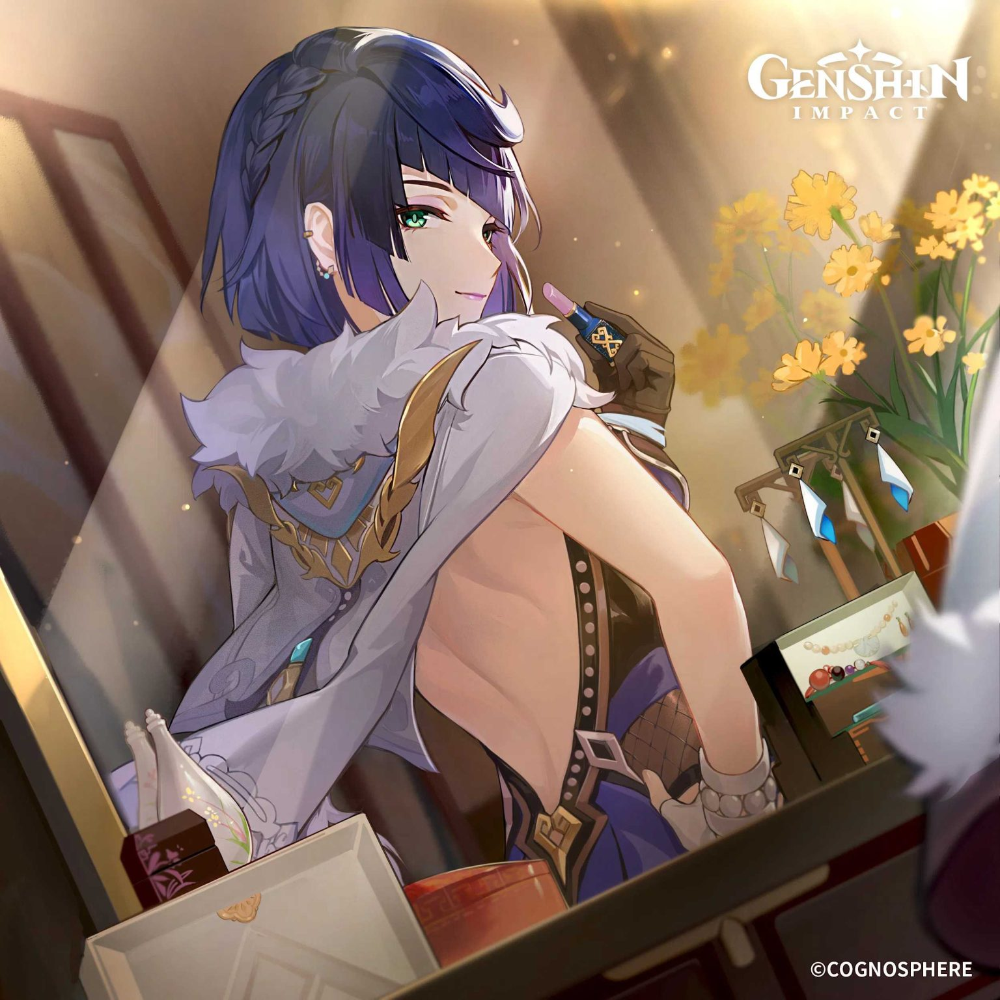
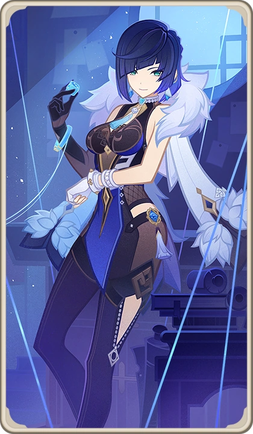
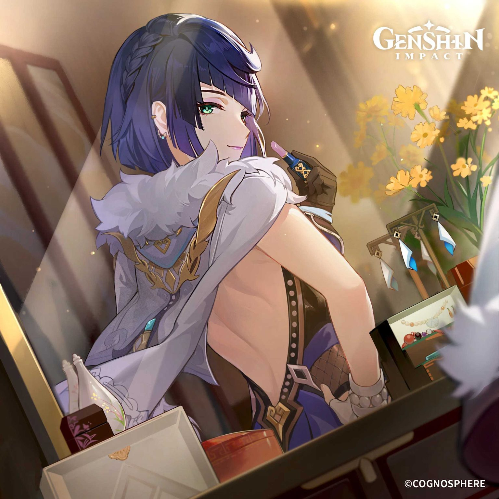
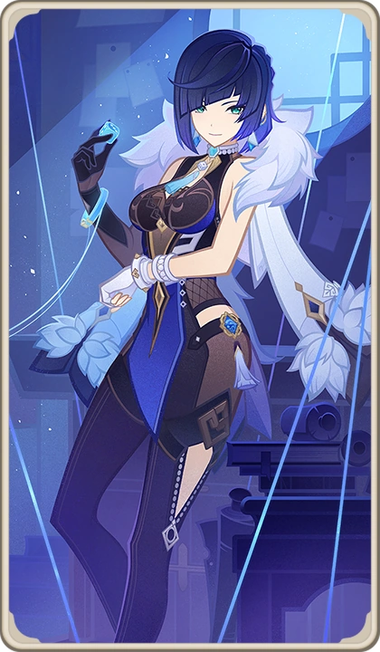
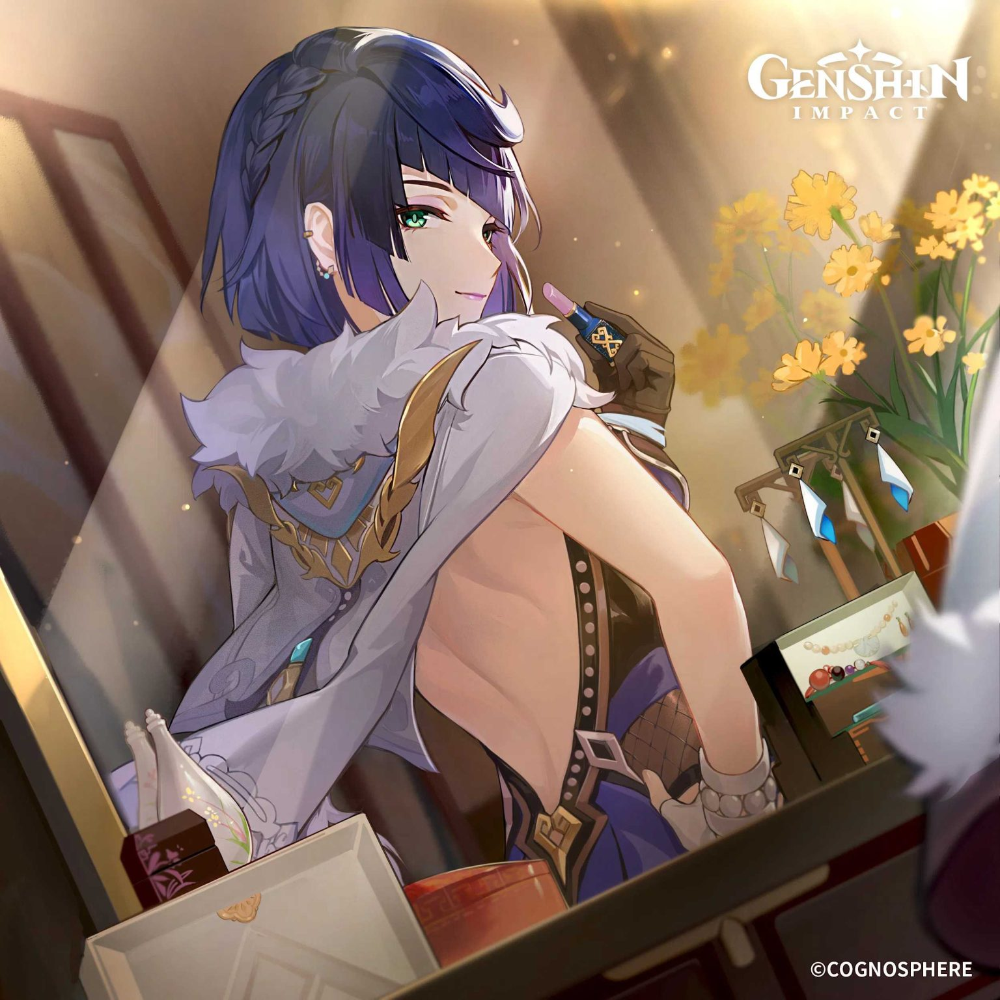
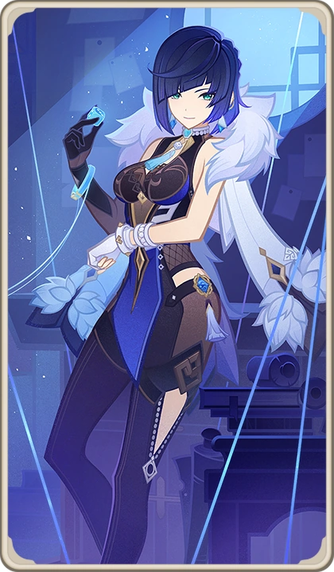

Gallery
 



Mysterious, elegant, and deadly accurate. Yelan is a Hydro bow user in Genshin Impact.
Yelan is a mysterious figure who claims to work for the Ministry of Civil Affairs in Liyue, though most details about her are shrouded in secrecy. She is calm, calculating, and uses her wit and charm to get results.
Lingering Lifeline — Yelan dashes swiftly, marking enemies with lifelines that explode to deal Hydro DMG.
Depth-Clarion Dice — Summons dice that follow the active character, dealing coordinated Hydro attacks.
Yelan excels as a sub-DPS, applying Hydro quickly while boosting team damage through her passive talents.


Fan-made website. Connect with other Genshin Impact players to share Yelan builds, team comps, and fan art.
Email: yelan.fans@gmail.com